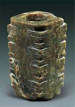

良渚遗址群将成为实证中国境内的五千年新石器时代人类文化史的圣地。
良渚文化
良渚文化代表遗址为良渚遗址，距今5300-4300年。良渚文化分布的中心地区在钱塘江流域和太湖流域，而遗址分布最密集的地区则在钱塘江流域的东北部、东部。 该文化遗址最大特色是所出土的玉器。挖掘自墓葬中的玉器包含有璧、琮、冠形器、玉镯、柱形玉器等诸多器型。此外，良渚陶器也相当细致。
良渚文化遗址中心位于杭州市区西北部瓶窑镇，核心部位于古城“反山、莫角山、汇观山，11条水坝”均在瓶窑境内。1936年发现的良渚遗址，实际上是余杭县的良渚 、瓶窑、安溪三镇之间许多遗址的总称，是长江下游良渚文化的代表性遗址，1959年依照考古惯例按发现地点良渚命名为良渚文化。遗址总面积约34平方公里。 良渚遗址是人类早期文化遗址之一，实证中华五千年的新石器时代文化史，申遗成功标志着中华五千年新石器时代文化史得到国际社会认可。 2019年7月6日，中国良渚遗址获准列入世界遗产名录 。
遗址发现
从1936年12月----1937年3月，考古发掘共进行了三次，获得了大量的石器、陶片、陶器等实物资料，由此从科学发掘的角度确认了良渚一带存在着远古文化遗存。 有了第一手考古发掘资料后，施昕更先生便着手撰写考古发掘报告，经过半年多的努力，报告完成，题为《良渚——杭县第二区黑陶文化遗址初步报告》（以下称《良渚》。 书中施昕更先生充分认识到了良渚遗址古文化在中国新石器时代文化中的重要性。虽然他当时认为这支古文化是龙山文化的一支而与后来认定的事实有背，但是应该说， 一个年仅25岁，非专业考古工作者的年青人，能作出这样的学术判断，已经是十分难能可贵了。事实上，他并不满足于已取得的成果，还想继续发掘考证。但是， 1937年7月7日芦沟桥事件变爆发，粉碎了他的计划。同年12月24日，杭州沦陷，施昕更先生所撰写的《良渚》一书的印刷被迫中断，他携带原稿，随西湖博物馆迁往浙南， 不久即投笔从戎，在瑞安县抗日自卫会工作。1938年，在非常艰难的情况下，依靠了好心人的帮助，几经周折，《良渚》一书才得以在上海勉强出版， 而被视为珍宝的许多出土器物则因来不及搬迁而毁于战火了。更不幸的是， 这位本来还应该能够在良渚遗址发掘研究上大有作为的年青人，在1939年5月因患猩红热而英年早逝。何天行与施昕更两位  先生对良渚文化发掘研究作出的贡献是不可磨灭的，正是由于他们的发现才会有今天的，他们是坐在同一条板凳上的两位先驱。1936年5月， 参加发掘杭州古荡古文化遗址，出土的有孔石斧，曾在良渚见过，乃于7月回良渚，在枯涸池底捡得石器数件，又在地面发现许多陶器碎片， 其中有陶鼎足。带回杭州，请董聿茂馆长鉴别。董认为这些陶器年代很古，说不定是个重大发现，支持他进一步发掘钻研。同年11月初，再赴良渚，在棋盘坟第一次发掘， 出土大批陶器。同年12月和次年3月，又进行第二次及第三次发掘。把发掘范围由良渚扩及安溪、长命、大陆三个乡，包括棋盘坟、横圩里、茅庵前、朱村兜、荀山、许家兜、 近山、横村塘、大雄寺、钟家村、金家弄、宋村、后河村等10余村，获得石器和陶器两大筐，500余件。4月，陪同南京中央研究院语言历史研究所董作宾、梁思永到遗址考察。对三次发掘的出土文物，进行了研究整理。在馆长董聿茂和同事钟国仪等的协助下，于1937年春，写就5万余字的《良渚》一书（又称《杭县第二区黑陶文化遗址的初步报告》），制图100余幅，详细介绍发掘经过、收获，提出颇有创见的看法，由西湖博物馆出版。文稿付排后，抗日战争爆发，印刷中止。昕更携带文稿，随西湖博物馆迁徙兰溪、永康、松阳，经董聿茂呼吁，浙江省教育厅同意出资付印。1938年秋， 《良渚》一书问世，引起国内外学术界瞩目。1959年底，考古学家夏鼐命名这一新石器文化为“良渚文化”。
出土文物
1986、1987年，从良渚墓葬中出土大量随葬品，其中玉器占90%以上，象征财富的玉器和象征神权的玉琮和象征军权的玉钺，为研究阶级的起源提供了珍贵的资料， 而且使世界上许多大博物馆对旧藏玉器重新鉴定、命名，使一些原被误认为是“汉玉”（实际上是良渚玉器）的历史推前了2000多年。出土的丝织品残片，是先摷后织的， 这是我国迄今发现最早的丝织实物，这块距今4700—5200年的丝绢堪称“世界第一片丝绸”。王遂今先生（《吴越文化史话》，浙江大学出版社，2003）等论证，“丝绸之源” 起源于长三角，上古黄河与西北是从河姆渡、良渚等江南丝绸文化北传过去的。1994年又发现了超巨型建筑基址，面积超过30万平方米，确认是人工堆积的大土台， 土层最厚处达10.2米，其工程之浩大，世所罕见。考古学界认为“良渚文化是中华文明的一个源头”。
文化分期
良渚文化大体可分为早、晚两期。早期以钱山漾、张陵山等遗址为代表。陶器以灰陶为主，也有少量的黑皮陶， 器形有鱼鳍形足的鼎、袋足、镂孔豆、贯耳壶、球腹罐、 附耳杯、附耳、大口圜底缸等。晚期以良渚、雀幕桥等遗址为代表。陶器以泥质黑皮陶较为常见，并有薄胎黑陶，器形有断面呈丁字形足的鼎、 竹节形把的豆、贯耳壶、贯耳罐、侈口圆腹罐、簋、大圈足盘、宽把带流杯等。
地理分布
良渚文化的分布主要在太湖流域和钱塘江流域，包括余杭良渚，还有嘉兴南、上海东、苏州、常州、绍兴、宁波一带；再往外，还有扩张区，西到安徽、江西， 往北一直到江苏北部，接近山东，曾经良渚人为了占领这里，还打了一仗；再往外，还有影响区，一直到山西南部地带。当时“良渚”势力占据了半个中国，如果 没有较高的经济文化水平，是不可能做到的。考古专家认为良渚古城其实就是“良渚古国”。良渚古城的发现， 有人认为中国的朝代的断代应从此改写——由现在认为的最早朝代为夏、商、周，改成良渚。
代表文物
十二节玉琮
玉琮本青绿色，玉料斑驳，后沁为黑褐色和暗红色。以12节简化的人面纹为饰，每节均以棱为中心，刻饰简化的神人纹，冠、嘴均简化，大多眼纹已模糊不清。玉琮两端对钻孔， 呈明显的喇叭口状，管钻穿孔。在大端射口中间部分雕琢一符号。
神人纹玉琮王
高8．8厘米外径17．6厘米1986年浙江余杭反山遗址12号墓出土，现藏浙江省文物考古研究所。为迄今良渚 文化中最大的玉琮，被称为“琮王”。纹饰是人面与兽面的复合形象，是良渚文化玉器上的典型图案，反映了良渚人高度发达的宗教信仰体系。